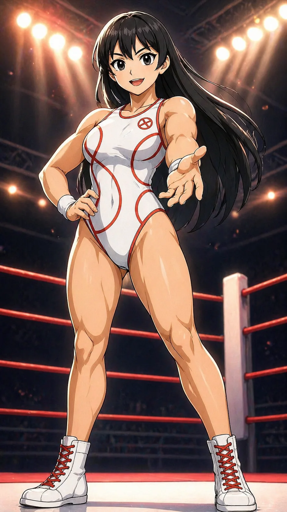

CHARACTER FILE

響
ひびき
『勇気を紡ぎ、未来を拓く光』
基本情報
- 年齢
- 22歳
- 体格
- 166cm・引き締まったアスリート体型（脚力と体幹が強靭）
必殺技
【ブレイブインパクト】 渾身のラリアットで勇気の波動を叩き込む一撃！
超必殺技
【ブレイブオーバードライブ】 フェアコアを最大解放し、光の奔流となって突進する超強打。リング全体を震わせる。怒りにより威力が加算される。
性格
真っすぐで誠実。リング外では親しみやすく、リング上では冷静沈着。 仲間を信じ導くリーダーシップを持つ。姉御肌。
ファイトスタイル
正統派バランス型。スピード、パワー、テクニックを高水準で兼ね備えるオールラウンダー。
相性
- 有利な相手
- 一点特化型（スピード型やパワー型）、感情に流されやすい相手
- 不利な相手
- 幻惑・錯乱系ファイター、極端な耐久型
プロフィール
真っ白なリングコスチュームに、情熱の赤い軌跡を刻む少女──響。 地元では“負け知らず”と称された圧倒的な実力を持ち、若くして頭角を現したが、その強さゆえに周囲から疎まれ、やっかみや誤解にさらされてきた。力を見せつけるたびに孤立し、いつしか“勝っても誰も喜ばない”という現実に気づき始める。 ある試合で、意図せず味方を巻き込む形で勝利してしまったことが、響の転機だった。 「強いだけじゃ、守れないものがある」――その悔しさと向き合い、初めて“仲間と戦う意味”を知った。以後、彼女は「誰かのために立つ」ことを信条に、自己を律し、支える側へと進化した。 未熟だがまっすぐなサラの情熱も、元ヴィランという過去を背負うアヤカの葛藤も、響は一切否定しない。 その存在自体が、仲間を信じる“覚悟の証”。ブレイブアベンジャーズの“魂”と称されるのも、決して偶然ではない。 彼女の拳は、もう独りのものではない。それは、仲間を守り抜くための、真の強さなのだ。
口癖
「大丈夫！私は最強だ！」